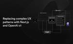

Inngest Product & Engineering Blog
https://www.inngest.com
Inngest's durable functions replace queues, state management, and scheduling to enable any developer to write reliable, multi-step code faster without touching infrastructure.
フィード

Replacing complex UX patterns with Next.js and OpenAI o1
Inngest Product & Engineering Blog
A reimagined contacts importer leveraging the power of reasoning models with Inngest
1日前
MEGA SEO: Building the next generation of blogging with AI workflows
Inngest Product & Engineering Blog
Joe Adams from MEGA SEO shares how Inngest enabled them to build AI workflows that would have been difficult or impossible to achieve with SQS.
14日前

Bulk cancellation UI: the latest addition to Inngest's recovery tool suite
Inngest Product & Engineering Blog
Handle incidents
21日前
Enhanced observability with Inngest: Waterfall trace view and advanced monitoring
Inngest Product & Engineering Blog
A new era for monitoring durable functions
22日前
Introducing Workflow Kit by Inngest
Inngest Product & Engineering Blog
The fastest way to build workflow UIs
23日前
Neon + Inngest: Trigger durable functions from database changes
Inngest Product & Engineering Blog
A new integration for Postgres database events
24日前
Announcing Inngest self-hosting
Inngest Product & Engineering Blog
The easiest way to self-host durable execution.
25日前
What are Durable Functions? A visual JavaScript primer
Inngest Product & Engineering Blog
Lydia Hallie's powerful animated illustrations cover the inner workings of Durable Functions.
1ヶ月前
Understanding the Differences Between Rate Limiting, Debouncing, and Throttling
Inngest Product & Engineering Blog
Explore three different ways to control your Inngest Function's runs.
1ヶ月前
Incident report for August 16, 2024 - Function execution outage
Inngest Product & Engineering Blog
A full report on the incident that caused function execution to fail on August 16, 2024 UTC.
2ヶ月前
Next.js Serverless Functions vs Durable Functions
Inngest Product & Engineering Blog
Learn how Durable Functions extends your Next.js experience by powering integrations, email scheduling, or AI workflows without timeouts.
2ヶ月前
Inngest's new design: Our process in rethinking our information architecture
Inngest Product & Engineering Blog
The Inngest Cloud and Dev Server got a brand new design. This post digs into the process behind this new Information Architecture.
2ヶ月前
Announcing: Batch Keys
Inngest Product & Engineering Blog
Batch keys allows developers to group work units by leveraging Inngest's efficient event-matching engine.
3ヶ月前
Sharding high-throughput Redis without downtime
Inngest Product & Engineering Blog
Read about how we rolled our new sharded infrastructure out to production without a millisecond of downtime and how it improved Inngest's overall performance.
3ヶ月前
Announcing Summer PCXI Hackathon
Inngest Product & Engineering Blog
Win $2,500 in a thrilling two-week hackathon using the PCXI stack: Prisma, Xata, Clerk, Inngest 🎉
3ヶ月前
Fixing noisy neighbor problems in multi-tenant queueing systems
Inngest Product & Engineering Blog
Ensuring fairness and consistent performance for all users with concurrency controls
4ヶ月前
Inngest is SOC 2 Type II compliant
Inngest Product & Engineering Blog
Our commitment to security and privacy for our company and platform
4ヶ月前
Migrating videos across platforms reliably - A look into Mux's Truckload project
Inngest Product & Engineering Blog
Dave Kiss shares his takeaways from building Truckload, a project which simplifies heavy video migration between hosting platforms.
5ヶ月前
What is waitUntil (Vercel, Cloudflare) and when should I use it?
Inngest Product & Engineering Blog
What is it, when to use it, and when not to use it
5ヶ月前
Accidentally Quadratic: Evaluating trillions of event matches in real-time
Inngest Product & Engineering Blog
Building the expression engine that powers ephemeral event matching.
5ヶ月前
A Deep Dive into a Video Rendering Pipeline
Inngest Product & Engineering Blog
banger.show is a video app maker that heavily relies on background data processing
5ヶ月前
AI in production: Managing capacity with flow control
Inngest Product & Engineering Blog
What do you need to take your LLM based product from demo to production?
6ヶ月前
Queues aren't the right abstraction
Inngest Product & Engineering Blog
Why you shouldn't directly use message queues in 2024
7ヶ月前
Finta's Automated Financial Synchronization powered by Plaid, Stripe and Inngest
Inngest Product & Engineering Blog
Learn how Finta builds and optimizes data pipelines.
7ヶ月前
Debouncing in Queueing Systems: Optimizing Efficiency in Asynchronous Workflows
Inngest Product & Engineering Blog
Explore backend message queuing systems, implementing debouncing in Postgres, and simplifying the process with Inngest.
8ヶ月前
Inngest raises $6.1M led by a16z
Inngest Product & Engineering Blog
Accelerating development of the reliability layer for modern applications
9ヶ月前
Edge Event API Beta: Lower latency from everywhere
Inngest Product & Engineering Blog
Targeting sub 100ms response times from anywhere in the world
9ヶ月前
Launch Week Recap
Inngest Product & Engineering Blog
A look at all the releases of the past week: from Replay and per-step error handling to new SKDs and integrations.
9ヶ月前
Improved error handling in Inngest SDKs
Inngest Product & Engineering Blog
Using native language primitives to handle failed steps
9ヶ月前
Building auth workflows with Clerk and Inngest
Inngest Product & Engineering Blog
How to trigger Inngest functions with Clerk events in the new integration
9ヶ月前
Svix + Inngest: Reliable Webhook Delivery and Execution
Inngest Product & Engineering Blog
Svix customers can now quickly integrate with Inngest
9ヶ月前
Cross-language support and new Inngest SDKs: Python, Go, with more to come
Inngest Product & Engineering Blog
The Inngest SDKs provide a language- and cloud-agnostic way to create fault-tolerant, long-running functions with built-in flow control.
9ヶ月前
Migrating long running workflows across clouds with zero downtime
Inngest Product & Engineering Blog
How the Inngest system is designed to help you migrate across clouds with minimal effort.
9ヶ月前
How we built a fair multi-tenant queuing system
Inngest Product & Engineering Blog
Building the Inngest queue - Part I
9ヶ月前
Bulk cancellation API
Inngest Product & Engineering Blog
Cancel a time range of functions using the REST API.
9ヶ月前
Adding workflows to an Astro app with Inngest
Inngest Product & Engineering Blog
Learn how to extend the range of your Astro app with long-running processes, and when to do so.
9ヶ月前
2023 Wrapped
Inngest Product & Engineering Blog
Over the past twelve months, we've shipped a lot and improved the DX across the board, our team has grown three-fold, and we were able to raise a seed round.
10ヶ月前
Building Metrics with TimescaleDB
Inngest Product & Engineering Blog
How we built better observability into Inngest
1年前
Python errors as values: Comparing useful patterns from Go and Rust
Inngest Product & Engineering Blog
Safer error handling, inspired by Go and Rust
1年前
New in observability: Function Metrics
Inngest Product & Engineering Blog
Better observability into function runs
1年前
User-Defined Workflows in Next.js with Sanity and Inngest
Inngest Product & Engineering Blog
Get your workflows up and running quickly with Sanity and Inngest in Next.js
1年前
Introducing Inngest TypeScript SDK v3.0
Inngest Product & Engineering Blog
Learn about the exciting new features in v3.0 and how to upgrade.
1年前
How a durable workflow engine works: you might not need a queue
Inngest Product & Engineering Blog
Breaking down how a durable workflow engine works, and how event-driven workflow engines improve DX.
1年前
Semi-Autonomous AI Agents and Collaborative Multiplayer Asynchronous Workflows
Inngest Product & Engineering Blog
Use Inngest and PartyKit to Power Up Your OpenAI Chatbots.
1年前
Sending customer lifecycle emails with Resend and Inngest
Inngest Product & Engineering Blog
How to Send Effective and Reliable Emails in your Next.js Applications with Resend & Inngest
1年前
Building an Event Driven Video Processing Workflow with Next.js, tRPC, and Inngest
Inngest Product & Engineering Blog
How Badass Courses built a self-service video publishing workflow for Kent C. Dodds with AI generated transcripts and subtitles.
1年前
Inngest raises $3M from GGV to build the reliable workflow platform for every developer
Inngest Product & Engineering Blog
New round led by Glenn Solomon of GGV Capital, including Guillermo Rauch and Tom Preston-Werner
1年前
Introducing Event Batching: Handling data at scale
Inngest Product & Engineering Blog
Providing a way to handle high load events, and processing them in bulk
1年前
Introducing Inngest TypeScript SDK v2.0
Inngest Product & Engineering Blog
Learn about the exciting new features in v2.0 and how to upgrade.
1年前
Introducing Branch Environments: Full-Stack Testing for Every Branch with Inngest
Inngest Product & Engineering Blog
Modern workflow for your business-critical code
1年前
Running chained LLMs with TypeScript in production
Inngest Product & Engineering Blog
Build production-ready zero-infra LLM backends using TypeScript in minutes
1年前
5 Lessons Learned From Taking Next.js App Router to Production
Inngest Product & Engineering Blog
What did we learn from building and shipping our new app with the Next.js 13 App Router?
1年前
Inngest - Add Superpowers To Serverless Functions
Inngest Product & Engineering Blog
Introducing the next version of Inngest!
1年前
Customer Case Study: Ocoya
Inngest Product & Engineering Blog
Learn how Ocoya uses Inngest to develop and deliver their world class product in record time, with end-to-end local testing.
2年前
Long-running background functions on Vercel
Inngest Product & Engineering Blog
How to run business critical jobs for minutes, hours or days
2年前
How to import 1000s of items from any E-commerce API in seconds with serverless functions
Inngest Product & Engineering Blog
Import data from Shopify, WooCommerce or BigCommerce APIs reliably and quickly
2年前
AI Personalization and the Future of Developer Docs
Inngest Product & Engineering Blog
Providing developer-specific examples to help developers learn how to use the Inngest SDK. The beginning of AI-personalized learning flows for users.
2年前
Deploying event-driven functions to RedwoodJS
Inngest Product & Engineering Blog
Announcing our new RedwoodJS handler.
2年前
Building More Reliable Workflows With Events
Inngest Product & Engineering Blog
Run critical code with guarantees and observability
2年前
Completing the Jamstack: What's needed in 2022?
Inngest Product & Engineering Blog
Where the Jamstack is today and what is left to complete the vision.
2年前
Vercel + Inngest: The fastest way to ship background functions
Inngest Product & Engineering Blog
Announcing our new Vercel integration.
2年前
Run Next.js functions in the background with events and schedules on Vercel and Netlify
Inngest Product & Engineering Blog
Learn how to use Next.js api functions and run them as you would a message queue or a cron job.
2年前
Building educational TypeScript tooling
Inngest Product & Engineering Blog
Create inituitive TypeScript libraries; don't make your user open the docs.
2年前
Modern serverless job schedulers
Inngest Product & Engineering Blog
Almost all developers use job schedulers stuck in the past. This post explores our modern system that improves dev UX with better tooling
2年前
No workers necessary - Simple background jobs with Node and Express
Inngest Product & Engineering Blog
Skip the queue and workers.
2年前
Building a Discord PR collaboration tool in an hour
Inngest Product & Engineering Blog
How we built a reliable webhook based PR collaboration tool in less time your average company's sprint planning meeting
2年前
Locally testable step functions made simple
Inngest Product & Engineering Blog
We're excited to release support for step functions which can run any language, all locally testable.
2年前
Inngest: OS v0.5.2 released
Inngest Product & Engineering Blog
Our next release improving rollbacks and developer UX
2年前
Introducing CLI Replays
Inngest Product & Engineering Blog
Battle-test your local code with real production events.
2年前
Load testing an event-driven message queue
Inngest Product & Engineering Blog
How to quickly run load tests on event-driven queues via K6
2年前
Building Webhooks That Scale
Inngest Product & Engineering Blog
Lessons learned scaling webhooks to millions of requests a day
2年前
Inngest: OS v0.5 released
Inngest Product & Engineering Blog
This release contains exciting new functionality, including replay and our self-hosting services
2年前
Message queue vs message bus: the practical differences
Inngest Product & Engineering Blog
We explore the difference between queueing systems and message busses
2年前
Building an event-driven queue based on common standards
Inngest Product & Engineering Blog
The design decisions and architecture for a next-gen queuing platform
2年前
Introducing Inngest DevServer
Inngest Product & Engineering Blog
The first tool purposely designed for event-driven asynchronous system local development
2年前
Open sourcing Inngest
Inngest Product & Engineering Blog
The open source, serverless event-driven platform for developers.
2年前
Rapidly building interactive CLIs in Go with Bubbletea
Inngest Product & Engineering Blog
Our product is just different enough to make our CLI require really good interactivity. We bundle an interactive event browser in our CLI. Here's how it's built.
3年前
Building a real-time websocket app using SvelteKit
Inngest Product & Engineering Blog
Our experience building https://typedwebhook.tools in 2 days using SvelteKit.
3年前
Product updates: Feb 8, 2022
Inngest Product & Engineering Blog
What's fresh out of the oven recently, and what's cooking? Here's our bi-weekly product deep dive.
3年前
Product updates: Jan 18, 2022
Inngest Product & Engineering Blog
What's fresh out of the oven recently, and what's cooking? Here's our bi-weekly product deep dive.
3年前
Programmable event platforms
Inngest Product & Engineering Blog
Programmable event platforms allow you to build serverless event-driven systems in minutes. Here's an introduction to them.
3年前
Introducing Inngest: an event workflow platform
Inngest Product & Engineering Blog
We’re launching Inngest, a platform designed to make building event-driven systems fast and easy.
3年前